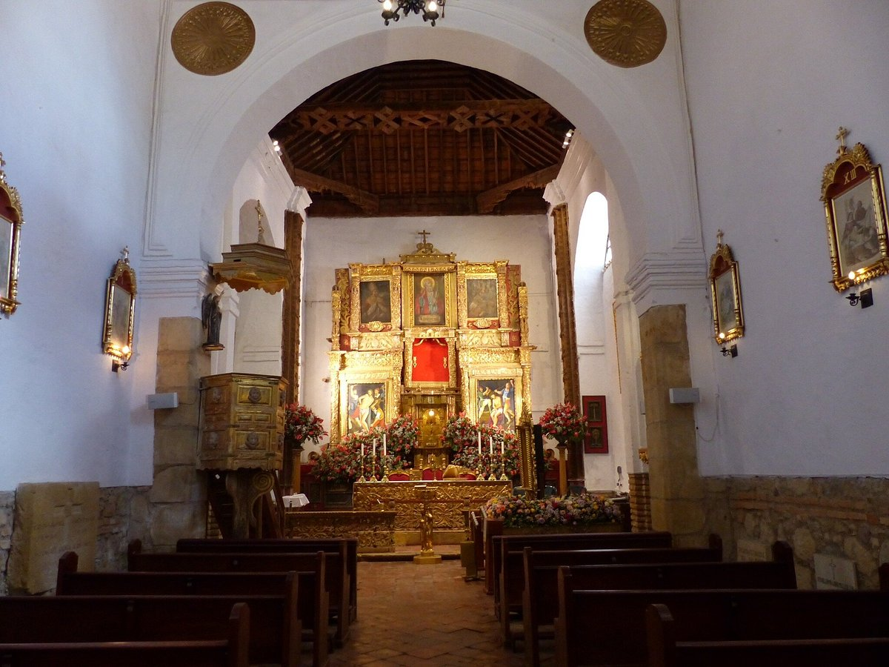
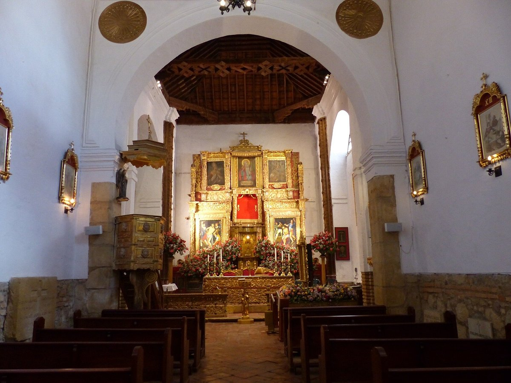

.jpg "Casa Terracota")


.jpg "Puente de Boyaca")
.jpg "Puente de Boyaca")
.jpg "Monasterio de la Candelaria") 

.jpg "Monasterio de la Candelaria")
MOGOLLA GUAYATUNA
Uno de los símbolos por excelencia del municipio Guayatá, ubicado en la provincia Oriente, es la mogolla guayatuna, un amasijo que se produce a base de harina de trigo, azúcar, levadura, mantequilla, que lleva una costra por encima en donde el ingrediente principal es el melao de panela. La mogolla guayatuna se viene produciendo hace unos 38 años y el secreto para su exquisitez se debe al amasado que debe ser totalmente a mano.
TAMAL BOYACENSE
El tamal boyacense se diferencia de los otros tamales de Colombia, por utilizar harina de maíz. También, dentro de sus características, está que para el envoltorio se usan hojas de rijua o chisgua. Estas variaciones pueden ser el secreto de su sabor.
GARULLAS Y PANDEYUCA
Las garullas, elaboradas con maíz, cuajada (producto lácteo) y manteca de cerdo, suele acompañarse con masato de arroz (bebida).
Entre los mil amasijos que puedes encontrar en Boyacá, no puedes irte sin probar el famoso pandeyuca, elaborado con queso campesino, almidón de yuca, claras de huevo, azúcar y sal.
CUAJADA CON MELAO
Este dulce típico conjuga lo mejor dos mundos: los españoles introdujeron la leche cuajada mientras la población autóctona el llamado “melao”; un almíbar que tiene como base panela, agua y mantiene una diversidad de uso en la gastronomía colombiana. Este dulce es un complemento perfecto para la leche cuajada. Además, el postre tiene como aderezo un poco de canela y una cucharadita de limón.

ENVUELTOS
Una de las recetas de envueltos colombianos más conocida es la de Boyacá. Estos se caracterizan por su delicioso sabor dulce y su suave textura. Son ideales para el desayuno o para unas ricas onces. Son elaborados con mazorca molida, queso o cuajada, bocadillo o uvas pasas y envueltos en hojas de maíz.
CHICHA
La chicha es una bebida típica de origen indígena, nuestros antepasados, con el maíz fermentado y cocido, elaboraban la chicha, una bebida que llegó a convertirse en uno de los principales productos de consumo.